Setting up SDL in Visual Studio.NET 2010 Express
Last Updated 2/18/12
1)First thing you need to do is download SDL headers and binaries.
You will find them on the SDL website, specifically on this page.
Scroll Down to the Development Libraries section and download the Windows development library:

Open the zip and there should be a folder inside of it.
Copy that folder to where ever you want. In these tutorials I'm putting the folder in C:\.
2)Start up Visual Studio and create a new empty project:
3)Under configuration properties, click on VC++ directories, click on include directories and a button on the right will appear:
Click that button, then click edit:
4)Click the folder icon and a new line with a new button will appear. Now click that new button.
5)Now select the include directory from the SDL directory you extracted: And then click ok.
6)Next find the lib folder from the archive:
If you don't see a x86 or x64 folder inside of the lib directory from the archive, just set the lib folder from the archive as the new library directory.
7)Under Linker in the Input menu, edit the Additional Dependencies:
8)In the linker paste:
9)Then under System, set the Subsystem to be Windows:
10)Add a new source file to the project:
11)Now paste the following code into your new source file:
You will find them on the SDL website, specifically on this page.
Scroll Down to the Development Libraries section and download the Windows development library:
Open the zip and there should be a folder inside of it.
Copy that folder to where ever you want. In these tutorials I'm putting the folder in C:\.
2)Start up Visual Studio and create a new empty project:
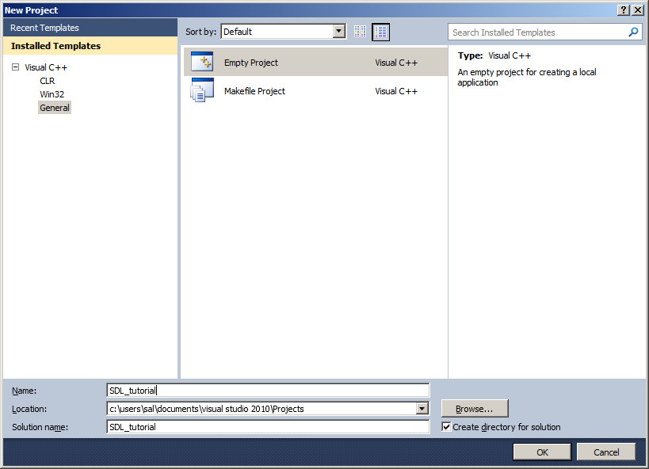
3)Under configuration properties, click on VC++ directories, click on include directories and a button on the right will appear:
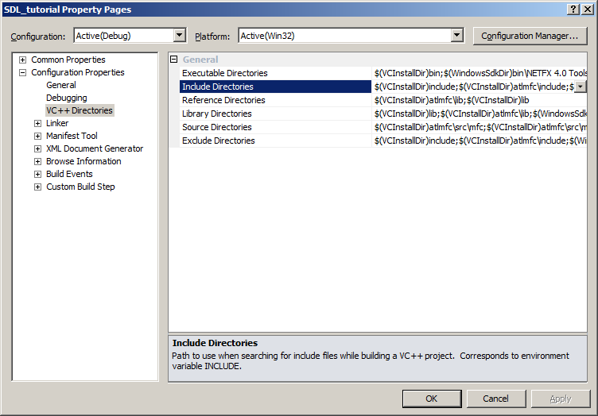
Click that button, then click edit:
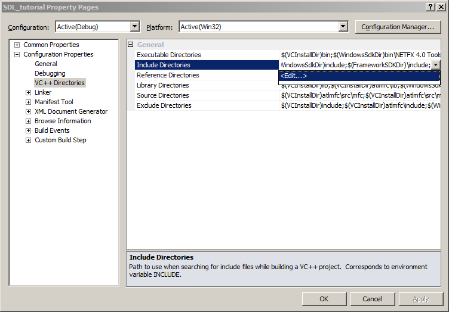
4)Click the folder icon and a new line with a new button will appear. Now click that new button.
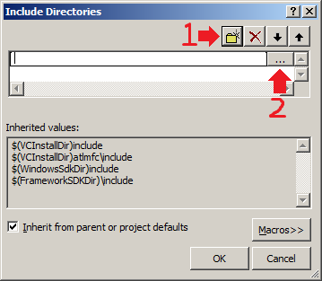
5)Now select the include directory from the SDL directory you extracted: And then click ok.
6)Next find the lib folder from the archive:
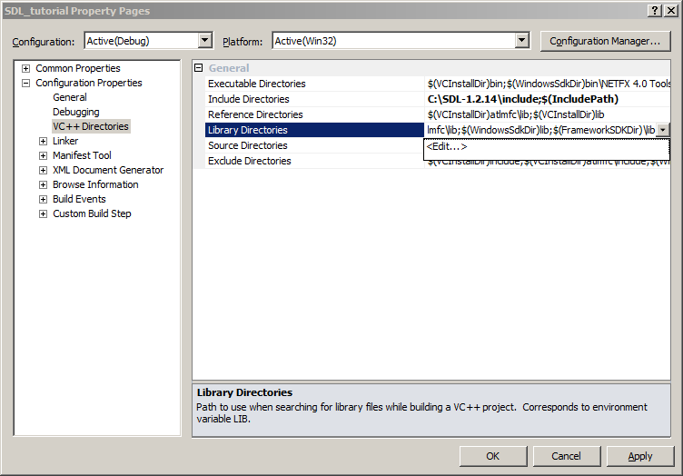
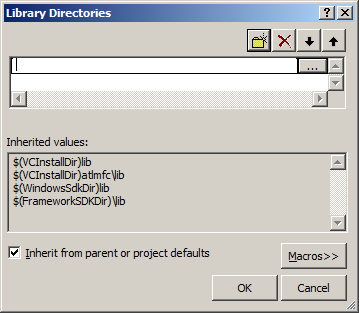
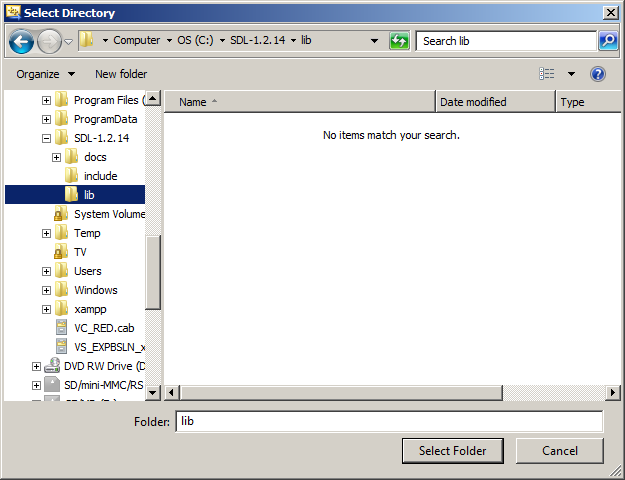
For certain versions of SDL, there will be a x86 folder and a x64 folder inside of the lib folder from the archive. The x86 folder contains the 32bit *.lib files
and the x64 bit folder contains the 64bit versions of the library files. If you're compiling a 32bit program, set the new library directory to the x86 folder and if you're
compiling a 64bit version set the new library directory to the x64 folder. By default Visual Studio compiles in 32bit so if you're not sure how you're compiling, try the 32bit
libraries first. What matters here is not whether you have 32/64bit windows, but what type of program you're compiling.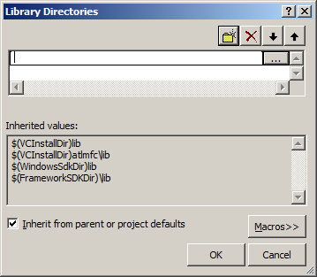
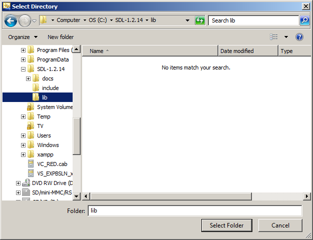
If you don't see a x86 or x64 folder inside of the lib directory from the archive, just set the lib folder from the archive as the new library directory.
7)Under Linker in the Input menu, edit the Additional Dependencies:
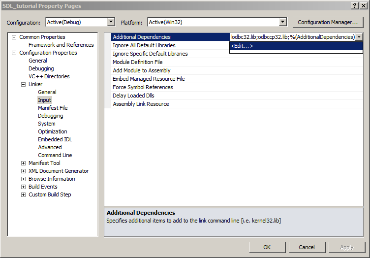
8)In the linker paste:
SDL.lib; SDLmain.lib;
in the Additional Dependencies field.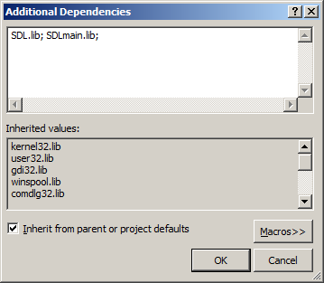
9)Then under System, set the Subsystem to be Windows:
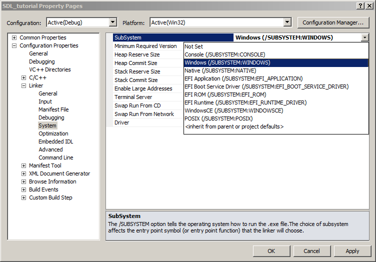
10)Add a new source file to the project:
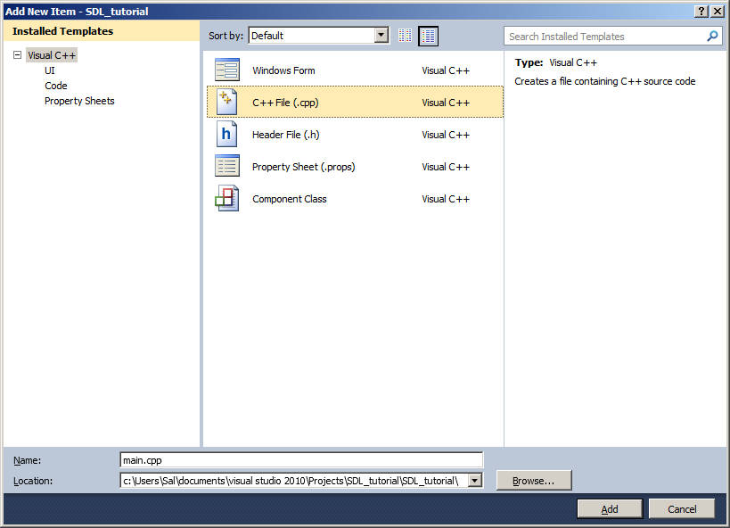
11)Now paste the following code into your new source file:
#include "SDL.h"
int main( int argc, char* args[] )
{
//Start SDL
SDL_Init( SDL_INIT_EVERYTHING );
//Quit SDL
SDL_Quit();
return 0;
}
and save the source file.
12)In the C/C++ menu under Code Generation, set "Runtime Library" to Multi-Threaded DLL:
13)Now build. If there are any errors, make sure you didn't skip a step. Before you can run this SDL application (which does nothing visible) take the SDL.dll from the archive you downloaded (it should be inside the lib subfolder) and extract it. You're going to put this in the same directory as your project/exe after you compile it.
Alternatively, you can copy SDL.dll to C:\WINDOWS\SYSTEM32 so your SDL app will find SDL.dll even if it's not in the same directory. If you're using a 64bit version of Windows, you'll want to put the dll in C:\Windows\SysWOW64.
The problem with this method is if you have multiple SDL apps that use different versions of SDL, you'll have version conflicts. If you have SDL 1.2.8 in SYSTEM32 when the app uses 1.2.13 you're going to run into problems. Generally you want to have your SDL.dll in the same directory as your executable developing and you'll always want to have SDL.dll in the same directory as the exe when distributing your app.
12)In the C/C++ menu under Code Generation, set "Runtime Library" to Multi-Threaded DLL:
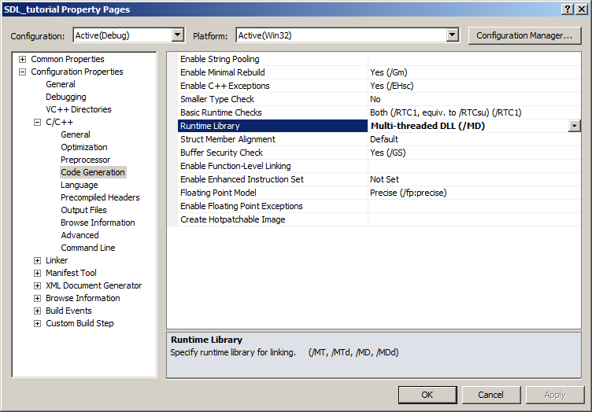
13)Now build. If there are any errors, make sure you didn't skip a step. Before you can run this SDL application (which does nothing visible) take the SDL.dll from the archive you downloaded (it should be inside the lib subfolder) and extract it. You're going to put this in the same directory as your project/exe after you compile it.
Alternatively, you can copy SDL.dll to C:\WINDOWS\SYSTEM32 so your SDL app will find SDL.dll even if it's not in the same directory. If you're using a 64bit version of Windows, you'll want to put the dll in C:\Windows\SysWOW64.
The problem with this method is if you have multiple SDL apps that use different versions of SDL, you'll have version conflicts. If you have SDL 1.2.8 in SYSTEM32 when the app uses 1.2.13 you're going to run into problems. Generally you want to have your SDL.dll in the same directory as your executable developing and you'll always want to have SDL.dll in the same directory as the exe when distributing your app.